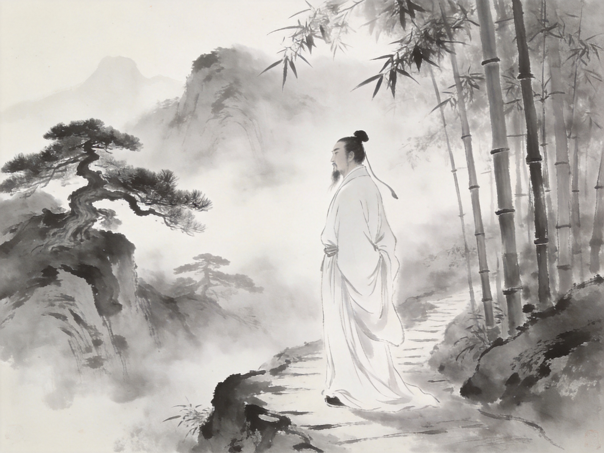
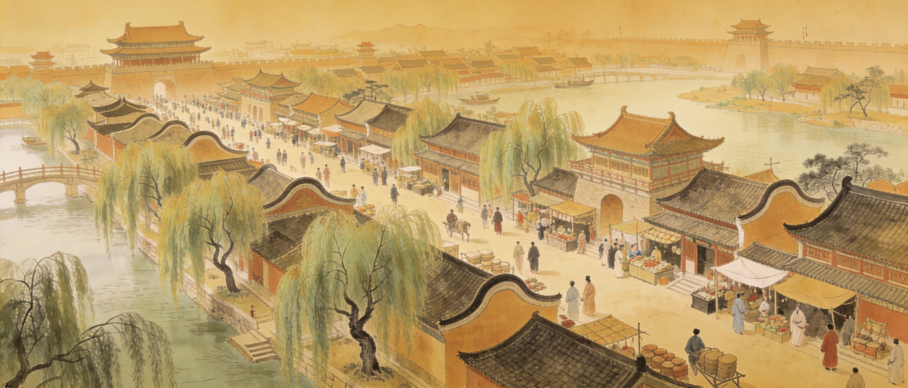
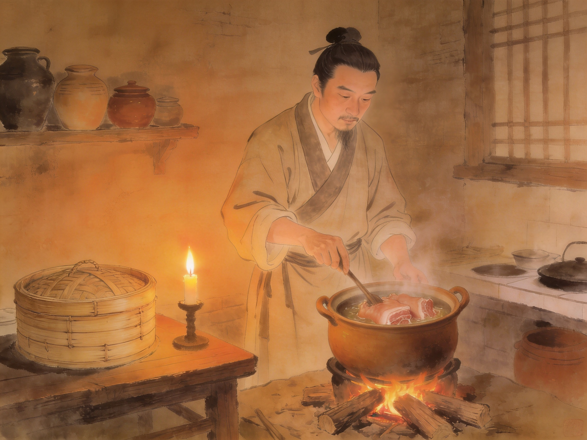
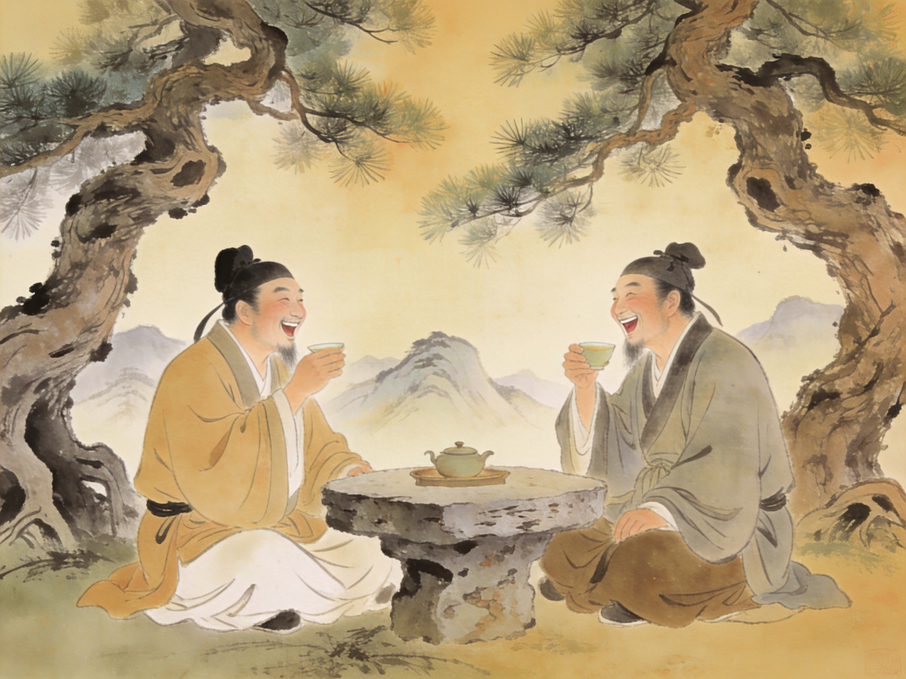
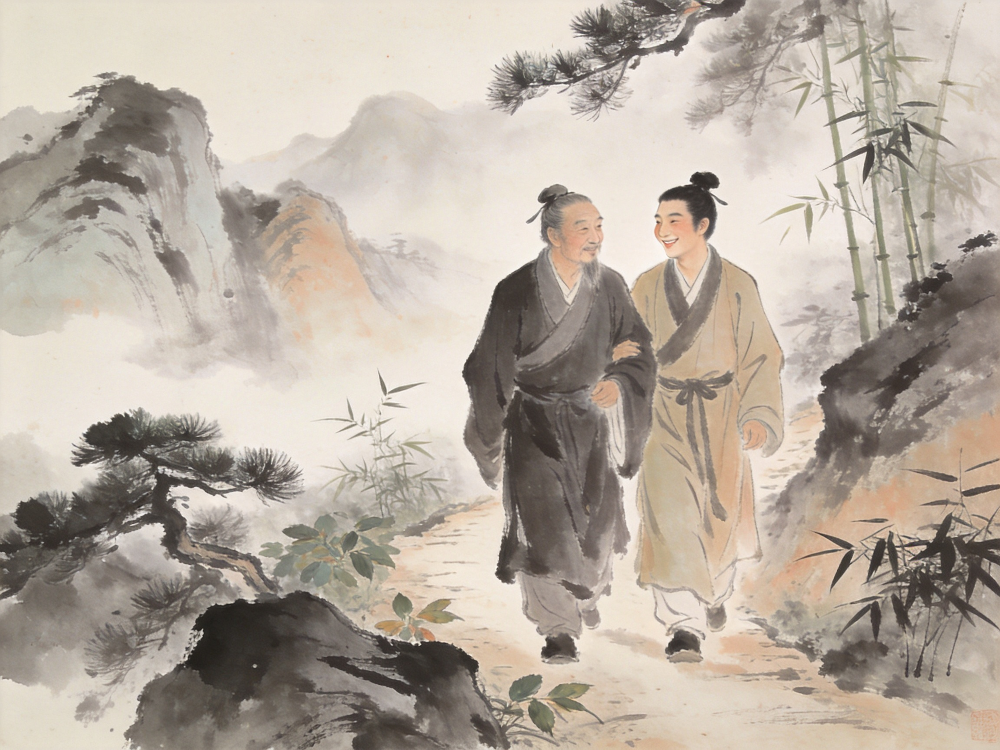

苏东坡（1037—1101），名轼，字子瞻，号东坡居士。眉州眉山（今四川眉山）人。
他是中国历史上罕见的全才——诗词文赋无一不精，书法绘画自成一家，水利工程惠及民生，美食创造流传千年。更难得的是，他一生三度被贬，最远流放海南，却始终保持着对生活的热爱与豁达。他留下的不仅仅是文学遗产，更是一种面对逆境的生活态度。
林语堂说他是「无可救药的乐天派」。王国维说：「三代以下诗人，无过屈子、渊明、子美、子瞻者。此四子者，若无文学之天才，其人格亦自足千古。」

苏轼生于北宋中期仁宗景祐四年（1037年）。他所处的时代，恰是北宋文化最灿烂的时期——「唐宋八大家」中宋占六家，都活跃在这个年代。
政治上，北宋实行「重文轻武」的国策，文人士大夫地位极高。但边疆压力从未停止——北有契丹辽国，西北有西夏李元昊。朝廷内部，改革派与保守派的党争愈演愈烈，这正是苏轼命运起伏的直接推手。
仁宗在位四十年（1022—1063），是北宋最繁荣的时期。城市经济空前发达，汴京人口超过百万，瓦舍勾栏遍布，活字印刷术的发明让知识传播前所未有地便捷。正是在这样的土壤中，苏轼的才华得以生长。
然而盛世之下，积弊已深——三冗（冗官、冗兵、冗费）问题严重，土地兼并加剧。当年轻的宋神宗与王安石开始轰轰烈烈的变法时，苏轼的命运也随之改变。
「三苏」——苏洵、苏轼、苏辙——是中国文学史上最著名的父子组合。苏辙在墓志铭中写道：「抚我则兄，诲我则师。」三人的关系超越了父子师生，是文学上相互砥砺的知己。
号老泉，二十七岁始发愤读书。其文笔老辣雄健，为「唐宋八大家」之一。《六国论》是传世名篇。他对两个儿子的教育影响深远——不只是教文章，更教独立思考。
字子瞻，号东坡居士。诗词文赋书画美食，无所不精。一生起伏跌宕，三度被贬而始终豁达。他是中国文人理想人格的化身——才华横溢，却从不恃才傲物。
字子由，与兄同榜进士。性情沉静内敛，文章汪洋澹泊。一生中多次为兄求情、代兄受过。苏轼获罪被贬时，苏辙常以身家性命担保。兄弟俩一生通信不绝，传世之作中有大量唱和诗。
苏轼出生在四川眉山一个书香门第。父亲苏洵是著名散文家，弟弟苏辙与他同年中进士。眉山地处西南，民风淳朴、文化兴盛，为少年苏轼提供了自由生长的环境。
21岁与弟弟同榜中进士。主考官欧阳修读到他的《刑赏忠厚之至论》，惊叹「此人可谓善读书，善用书，他日文章必独步天下」，却因疑心是弟子曾巩所作，只给了第二名。从此苏轼名满天下。
参加制科考试，获「第三等」——这是北宋制科的最高等级，此前只有吴育一人获此殊荣。随后赴凤翔府（今陕西）任签书判官，是他政治生涯的起点。在这里他亲眼目睹了民间疾苦，萌生经世济民之志。
因与王安石变法理念不合，自请外放。任杭州通判期间，游西湖、访寺院、作诗词，写下「欲把西湖比西子，淡妆浓抹总相宜」。这是他第一次近距离体验地方政务，也是他文学创作的第一个高峰期。
因诗文被御史弹劾「讥讽朝政」，被捕入御史台狱（因院中遍植柏树，常有乌鸦栖息，故称「乌台」）。关押103天，多次被审讯逼供，几近处死。经多方营救（包括王安石上书「安有盛世而杀才士者？」），最终被贬黄州。
在黄州城东的坡地上开荒耕种，自号「东坡居士」。这一年他写下了《念奴娇·赤壁怀古》《前赤壁赋》《后赤壁赋》《记承天寺夜游》——几乎一夜间将中国文学的巅峰又抬高了一层。他不只是活下来了——他活成了另一种人。
神宗去世，高太后摄政，起用旧党。苏轼被召回京，短短数月连升数级，官至翰林学士。但他不盲从旧党，对新法也不全盘否定——「较之新法，旧党亦有过之」。这种独立立场使他两面不讨好，再次自请外放杭州。
任杭州知州。疏浚西湖，用淤泥筑堤——今「苏堤春晓」即其遗迹。同时开设了中国最早的公立医院之一「安乐坊」，救治瘟疫患者。这是他政治生涯中最大的实绩，至今惠泽杭州。
新党再度上台，苏轼首当其冲。先被贬惠州（广东），写下「日啖荔枝三百颗，不辞长作岭南人」。62岁时再贬儋州（海南岛）——当时被视为天涯海角的流放极限。他却在海南教书育人，培养了当地第一位举人姜唐佐。
徽宗即位，大赦天下。苏轼北归途中，病逝于常州，享年64岁。临终对三个儿子说：「吾生无恶，死必不坠。」消息传开，「吴越之民，相与哭于市」。杭州、湖州等地百姓自发罢市悼念。苏辙遵兄遗嘱，将他安葬于汝州郏城县。
苏轼的一生，是一部从锋芒毕露到淡然超脱的精神成长史。三次贬谪，恰好印证了他三个阶段的心境变迁。
初入仕途时的感悟。已见人生无常的智慧，但仍是一种乐观的困惑——他知道自己是鸿鹄，却还不确定要飞向何方。
经历了生死考验后的通透。不再是年轻时的哲学思辨，而是经历过后的接纳。「逆旅」是客栈，是短暂停留——他已接受命运不过是一场旅程。
去世前两个月写下的总结。用三次贬谪定义自己的一生——不是官位，不是名声，而是那些最艰难的时刻让他真正成为了苏东坡。这不是自嘲，是彻底的自我和解。
苏轼现存诗约2700首、词约300首，各体文章数千篇。他是宋词豪放派的奠基人，其文在「唐宋八大家」中与韩柳并峙。所谓「诗至杜子美，文至韩退之，书至颜鲁公，画至吴道子，天下之能事毕矣。能事毕而苏子出焉」。
以主客问答的形式，探讨宇宙与人生的哲理。文中「逝者如斯，而未尝往也；盈虚者如彼，而卒莫消长也」——将庄子哲学化入文学，是中国散文的最高成就之一。
仅84字，写与张怀民夜游承天寺。月光的空灵，人生的闲适，透过三个比喻写尽。是北宋小品文的巅峰。
苏轼是北宋「尚意」书风的代表人物，与黄庭坚、米芾、蔡襄并称「宋四家」。他的《寒食帖》被誉为「天下第三行书」（仅次于王羲之《兰亭序》和颜真卿《祭侄文稿》）。
画论方面，他提出「论画以形似，见与儿童邻」，强调神似重于形似。他擅长画竹石枯木，以简洁的笔墨传神。他开创了「文人画」的传统——画不只是造型艺术，更是画家精神世界的显现。
《寒食帖》写于黄州被贬第三年。笔势跌宕错落，字形忽大忽小，浓墨处如泣血，飞白处如叹息。前半尚稳，至「春江欲入户」后渐狂——不仅是中国书法巅峰，也是苏轼内心苦闷最直接的流露。
苏轼画竹，主张「胸有成竹」——「竹之始生，一寸之萌耳，而节叶具焉。今画者乃节节而为之，叶叶而累之，岂复有竹乎？故画竹必先得成竹于胸中。」（《文与可画筼筜谷偃竹记》）他画竹往往用朱砂画红竹，世人问为何？答：「世间亦有墨竹，何不问我为什么不能用红画？」

苏轼是中国文化史上最著名的美食家。被贬黄州时，他发现当地猪肉便宜却没人会做，于是亲自下厨炮制——这就是流传至今的「东坡肉」。
他在《猪肉颂》中详细记录了做法：「净洗铛，少著水，柴头罨烟焰不起。待他自熟莫催他，火候足时他自美。」慢火、少水、耐心——这不仅是烹饪之道，也是他的人生哲学。
黄州之后，他的美食版图一路扩展：
慢火红烧肉，肥而不腻。至今是杭州名菜，也是全国大小餐馆的必备菜。
用鲜鲤鱼，剖开不切，加盐、酱、姜、葱清炖。鲜嫩无比。
「日啖荔枝三百颗，不辞长作岭南人。」流放中的自我安慰，却成了最著名的荔枝广告。
在海南发现生蚝美味，写信提醒儿子：「无令中朝士大夫知，恐争谋南徙，以分其味。」
用面粉、芝麻、香油制作的酥饼，流传湖北黄冈一带。
以黄州豆腐为主料，配以火腿、虾米蒸制。是杭州素菜名品。

苏轼一生交友遍天下。他说「吾上可陪玉皇大帝，下可陪卑田院乞儿，眼前见天下无一个不好人。」这份赤子之心使他的友情超越了身份与流派。
主考官，苏轼的伯乐。读苏轼文章后说「老夫当避路，放他出一头地」。这句话产生了成语「出人头地」。欧苏接力，完成了北宋古文运动的传承。
「一屁过江来」的典故：苏轼坐禅感悟，作诗「八风吹不动，端坐紫金莲」。派书童送佛印看。佛印批：「放屁」。苏轼大怒过江质问。佛印笑：「八风吹不动，一屁过江来。」苏轼惭愧而笑。他们的机锋对答，是中国禅宗文学中最生动的一页。
乌台诗案中，已退隐的王安石上书神宗：「安有圣世而杀才士乎？」最终救了苏轼一命。政敌之间的相惜——晚年两人在金陵相会，谈诗论文数日，苏叹道：「不知更几百年，方有如此人物。」
「苏门四学士」之首，也是苏轼一生的知己。两人在书法上齐名（「苏黄」），在诗词上相互砥砺。黄庭坚说苏轼「文章妙天下，忠义贯日月」。苏轼去世后，黄庭坚在室内挂苏轼像，每日焚香致敬。
陈慥是苏轼在凤翔任官时的好友，后隐居黄州。苏轼被贬黄州后，两人常一起游山玩水。陈慥的妻子柳氏以善妒著称——成语「河东狮吼」即出自苏轼为陈慥写的打趣诗。
元丰六年十月十二日夜，被贬黄州的苏轼和张怀民同在承天寺。月色入户，两人欣然起行——这便有了千古名篇《记承天寺夜游》。「何夜无月？何处无竹柏？但少闲人如吾两人者耳。」

苏轼与苏辙（子由）的兄弟情谊，是中国历史上一段佳话。二人不仅是骨肉兄弟，更是文学知己、精神同道。
兄弟俩同榜进士。苏轼性格豪放开朗，苏辙沉静内敛，恰如互补。苏轼一生中最著名的那首《水调歌头·明月几时有》——「但愿人长久，千里共婵娟」——就是中秋夜怀念弟弟苏辙而作。
乌台诗案时，苏辙上书神宗，愿以自己的全部官职为兄长赎罪。他的奏章情深意切：「臣闻困急而呼天，疾痛而呼父母。臣之困疾，未有甚于今日者也。」
兄弟俩一生聚少离多，但通信不绝。《东坡集》中写给苏辙的诗有百首以上。苏辙为兄长写的墓志铭——「抚我则兄，诲我则师」——是兄弟情最简洁也是最深沉的总结。
苏轼一生中有三位重要的女性，各自在他生命的不同阶段留下了深刻的印记。他的婚姻生活不像他的仕途那样跌宕起伏，但却是他精神世界的重要组成部分。
王弗是苏轼的第一任妻子，知书达理，聪明机敏。苏轼读书时，她常在旁陪伴；苏轼见客时，她隐在屏风后听，事后分析"某人说话模棱两可，不值得结交"。王弗去世后，苏轼在她坟前手植三万株松树。十年后写下千古第一悼亡词《江城子》——「十年生死两茫茫，不思量，自难忘。」
王弗死后三年，苏轼续娶了她的堂妹王闰之。闰之陪伴苏轼25年，经历了乌台诗案、黄州贬谪、起复回朝、再到杭州——是她陪他走过了一生中最动荡的岁月。她是一个朴实的女子，却有一颗包容的心。苏轼在黄州种地时，她和他一起劳作、一起酿酒。
王朝云12岁入苏家，是苏轼晚年最懂他的人。苏轼被贬惠州时，众多侍妾散去，唯有朝云执意相随。她唱「枝上柳绵吹又少」时泪流满面，说「妾所不能歌者，'枝上柳绵吹又少，天涯何处无芳草'也」——她听懂了词中的悲凉。朝云病逝于惠州，苏轼按佛礼葬她，题「惠州西湖栖禅寺朝云墓」。此后苏轼再不听此曲。
杭州名妓琴操，聪慧异常。一日苏轼问她：「我作长老，你来参禅，如何？」琴操答：「好。」苏轼问：「湖中景致如何？」答：「落霞与孤鹜齐飞，秋水共长天一色。」苏轼问：「景中人如何？」答：「裙拖六幅湘江水，髻挽巫山一段云。」苏轼问：「人心中事如何？」答：「随他。" 苏轼叹服。琴操后来在东坡点拨下出家为尼。
民间传说苏轼有一个妹妹叫苏小妹，与秦观（少游）成婚。史上并无此人（苏轼只有姐姐八娘），但这不妨碍民间创造大量苏轼与苏小妹互怼、秦观娶亲的趣闻。其中最著名的是苏小妹出的对联：「闭门推出窗前月」——秦观对不出，苏轼暗中投石入水，秦观灵机一动：「投石冲开水底天」。
苏轼与佛印泛舟江上，苏轼指着河岸上啃骨头的狗，笑问佛印：「你看到什么？」佛印微微一笑：「狗啃和尚骨。」苏轼愕然——他的本意是「狗啃河上（和尚）骨」，没想到佛印已经看穿了他的心思，还回了这么一句。
苏轼特别注重养生，自创「东坡养生术」。每天梳头百下、叩齿三十六、散步数里。他写《养生论》说：「吾闻战国中有一方，吾服之有效，故以奉传。其药四味而已：一曰无事以当贵，二曰早寝以当富，三曰安步以当车，四曰晚食以当肉。」——无事、早睡、走路、少吃。
苏轼酷爱饮酒，但他酒量不大——「予饮酒终日，不过五合」。他更喜欢酿酒的过程，先后尝试酿制了蜜酒、桂酒、松酒、真一酒等多种酒品。他甚至写了一本《东坡酒经》，详细记录了酿酒工艺。不过据同时代人的记载，他酿的酒品质堪忧——朋友喝了他酿的蜜酒后集体腹泻。
苏轼的朋友陈慥（季常）好谈佛理，却是个怕老婆的男人。苏轼写了一首诗打趣他：「龙丘居士亦可怜，谈空说有夜不眠。忽闻河东狮子吼，拄杖落手心茫然。」「河东狮吼」从此成了悍妇的成语。
在黄州时，苏轼在东坡上建了一间茅屋。落成之日正逢大雪，他欣然取名为「雪堂」，四壁画雪景。雪堂不仅是他的居所，更是他精神世界的象征——他在此读书、写作、会友、酿酒，度过了生命中最重要的四年。他写道：「吾饮酒至少，常以把杯为乐。往往颓然坐睡，人见其醉，而吾中了然，盖莫能名其为醉为醒也。」——他是醒是醉，已无人能明。
他疏浚西湖筑成苏堤，至今是「西湖十景」之首。他开设的安乐坊，是中国最早的公立医院之一。他的《寒食帖》是「天下第三行书」。
他是「唐宋八大家」之一，是「宋四家」之首。他一生中几乎没有敌人——即使是政治对手，也都尊重他的人格。王安石在他落难时出手相救，因为「安有圣世而杀才士？」
但比这些成就更重要的，是他面对命运的态度。三次贬谪，越贬越远，他却越活越开阔。在黄州，他种地酿酒写赤壁；在惠州，他日啖荔枝研究生蚝；在儋州，他办学教书开化一方。他把最坏的命运，过成了最好的诗。
他去世近千年后，我们依旧在读他的诗，吃他发明的菜，走他修筑的堤。
一个人活成这样，就够了。